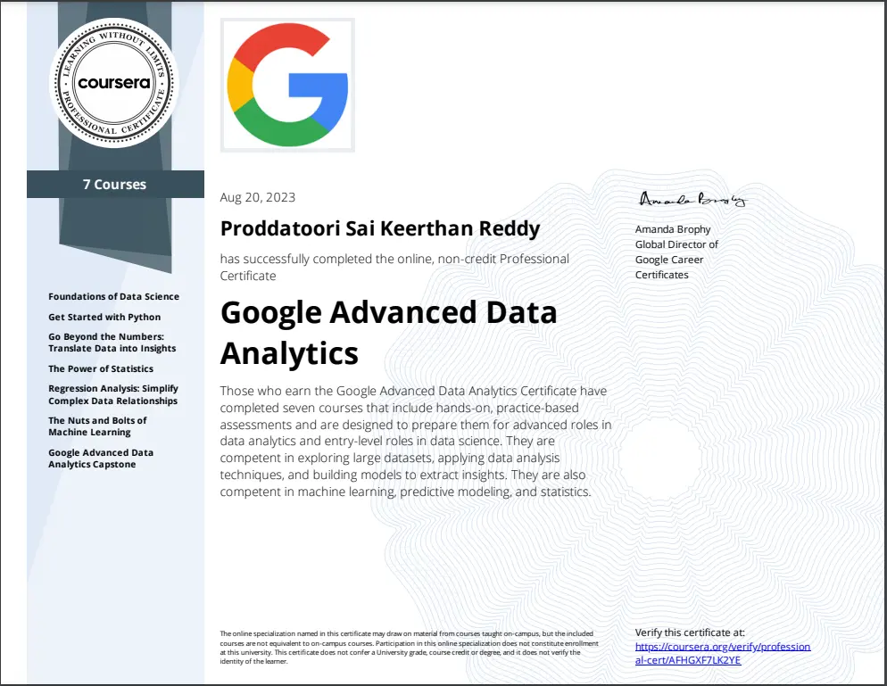
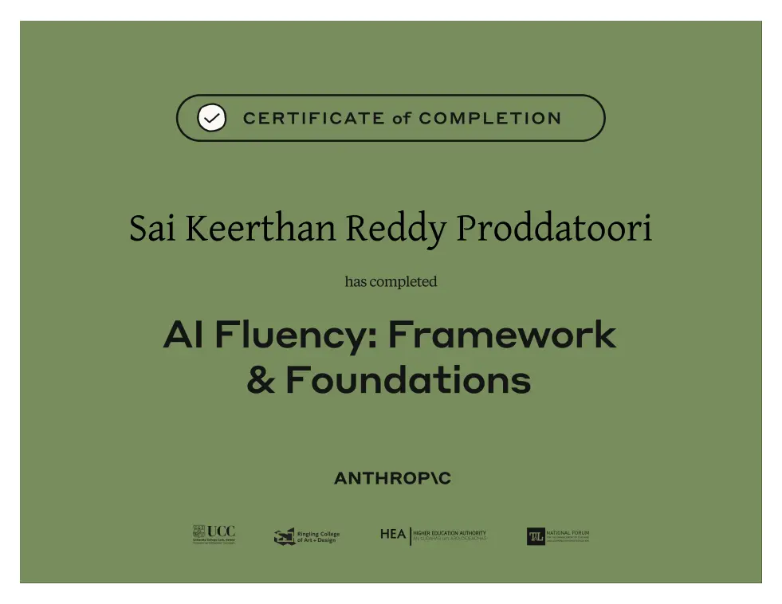
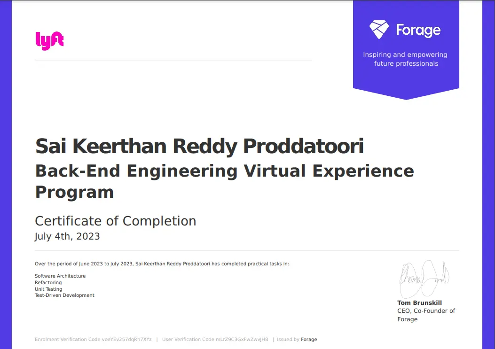

Data and Reporting Analyst with 4+ years of experience developing business intelligence solutions, transforming raw datasets, and delivering actionable insights across financial services and healthcare operations.
Skilled in creating interactive dashboards and management reports using Power BI Desktop, Power BI Service, Tableau Desktop, and Tableau Server to support operational monitoring and business decision-making.
Strong command of SQL and T-SQL for data extraction, complex joins, aggregations, reconciliation, and validation of datasets used in recurring reports and analytical solutions.
Hands-on experience with DAX, Power Query, and M Query for business calculations, data cleansing, transformation logic, and building reusable reporting models.
Knowledge of Microsoft Fabric, OneLake, and Lakehouse architecture for organizing analytical data and supporting centralized reporting environments.
Experience working with Azure Data Factory, Azure Databricks, PySpark, and Spark SQL to prepare, process, and transform structured datasets for downstream analysis.
Proficient in developing Power BI semantic models, star schemas, and snowflake schemas that support consistent KPI calculations, efficient filtering, and reliable dashboard performance.
Familiar with ETL/ELT workflows, incremental refresh, query folding, data validation, and performance tuning to improve data preparation and reporting reliability.
Capable of developing business-focused analytics using Python, Pandas, and NumPy to investigate data inconsistencies, examine trends, and support analytical validation.
Experienced in implementing reporting controls through Row-Level Security (RLS), performing user acceptance testing, and coordinating with stakeholders to validate business requirements and reporting outputs.
Comfortable working with Azure DevOps, Git, JIRA, Confluence, and Agile/Scrum methodologies to manage reporting changes, collaborate with technical teams, and support controlled delivery of analytics solutions.
Technical Skills
Business Intelligence & Reporting
Data Modeling & Visualization
Programming & Data Analytics
Cloud & Data Platforms
Databases & Analytical Systems
ETL & Data Processing
AI & Machine Learning
DevOps & Automation
Security & Collaboration
Methodologies & Delivery
Professional Experience
Data Analyst · UAB Medicine
Birmingham, AL · March 2025 – Present
Brought operational reporting needs into a unified Microsoft Fabric and Power BI environment, developing dashboards that help authorized teams review appointment activity, patient access patterns, departmental workloads, and selected revenue cycle indicators. Organized datasets through OneLake and Lakehouse storage, separating raw source extracts from prepared analytical tables so data preparation issues could be traced without rebuilding downstream reports, and built and maintained ingestion workflows with Azure Data Factory and applicable Fabric pipeline capabilities, checking that scheduled loads completed with the expected records.
Processed appointment, encounter, and operational datasets with PySpark and Spark SQL in Azure Databricks, standardizing fields, handling inconsistent values, and preparing larger datasets for reliable analysis. Applied a Medallion Architecture pattern to separate raw ingestion, cleaned data, and reporting-ready outputs, making it easier to identify where data-quality issues originated, and used Power Query and M to align category labels, correct data types, combine structured extracts, and resolve column-level inconsistencies before refreshing reporting models.
Shaped healthcare datasets into Power BI semantic models, organizing fact and dimension tables around appointment dates, departments, encounter categories, and service lines. Defined operational calculations in DAX, including appointment completion, cancellation patterns, no-show rates, and aging indicators where supported by available data, so dashboard metrics followed agreed definitions, and built Power BI visualizations that let users narrow results by location, service line, department, and time period to investigate patient access and workload bottlenecks.
Reviewed refresh strategies and query execution behavior, applying incremental refresh and query folding where source systems and model configuration supported them to limit unnecessary processing. Checked reporting datasets with SQL, Python, and Pandas, comparing source and transformed records, identifying missing values and duplicates, and documenting exceptions for investigation before affected figures were used in operational reviews.
Configured and tested Row-Level Security (RLS) against approved access requirements, verifying that the semantic model returned the appropriate information for each user role and protected restricted healthcare data. Used Git and Azure DevOps within the team's change-management process to track, review, and test analytics changes before release to shared environments, and worked with patient access, operational, revenue cycle, and technical stakeholders to define requirements, resolve differences in KPI interpretation, and incorporate UAT feedback into dashboard updates.
Reporting Analyst · Invesco
Hyderabad, India · February 2022 – July 2024
Developed Power BI dashboards that consolidated portfolio returns, asset allocation, and business performance indicators, and translated business requirements into interactive Tableau dashboards with filters, parameters, and dashboard actions to analyze investment performance across portfolios, reporting dates, and business segments. Published and maintained reports through Power BI Service and Tableau Server, validating functionality, coordinating access permissions, and ensuring users could access approved report versions.
Extracted and consolidated financial datasets using SQL and T-SQL, joining multiple tables, applying business rules, and validating figures before they went into management reports. Cleaned and transformed data with Power Query and M, resolving duplicate records, inconsistent date formats, missing values, and mismatched field names, and used Python and Pandas for validation, reconciliation, and analysis of large extracts to find missing records and differences between source data and dashboard outputs. Streamlined spreadsheet reporting in Microsoft Excel with PivotTables, lookup formulas, and structured reconciliation templates.
Designed star-schema data models with fact and dimension tables to support analysis by portfolio, business unit, and reporting period, and created reusable DAX measures for period-over-period comparisons, cumulative calculations, and financial KPI tracking with consistent logic across reports. Improved report performance by reviewing SQL queries, optimizing DAX calculations, refining model relationships, and removing unnecessary visuals.
Developed Power BI Paginated Reports for detailed financial statements and fixed-format requirements, enabling parameter-based outputs and structured data exports for business teams. Automated recurring reporting notifications and approval workflows with Microsoft Power Automate, reducing manual follow-ups and helping stakeholders receive updates and review requests on time.
Assisted with financial data preparation in Azure Databricks using PySpark for cleansing, aggregation, and preparation of structured datasets, and supported data ingestion and refresh through Azure Data Factory (ADF), monitoring pipeline execution and investigating refresh failures that affected data availability. Collaborated with business stakeholders during User Acceptance Testing (UAT) to confirm KPI definitions, validate report changes, document calculation rules, and track defects and enhancements in JIRA.
Education
Master’s in Data Science
University of Alabama at Birmingham — Birmingham, Alabama
August 2024 – May 2026
Bachelor’s in Science
Osmania University — Hyderabad, Telangana, India
Projects
Economy bot discord.py
An economy bot for Discord, built with
Python, capable of connecting to any of the
following databases: MySQL, SQLite,
aiosqlite, and MongoDB.
discord-cooldown
package
A responsive package for bot command
cooldown, with this package you can create
cooldowns for commands so that their
cooldown timers will not be reset upon
restarting the bot.
discord-btns-menus
package
A responsive package for Buttons, DropMenus,
Combinations and Paginator for discord API.
This module makes the process a lot easier !
pycolorise
package
A simple package to Add colors/fonts in the
terminal.
Certifications

Google Advanced Data Analytics by Google on Coursera

AI Fluency: Framework & Foundations from Anthropic
Software Engineering Virtual Experience Program by JPMorgan CHASE and Co. on Forage

Back-end Engineering Virtual Experience Program by Lyft on Forage
Advanced Software Engineering Virtual
Experience Program by Walmart Global Tech on
Forage